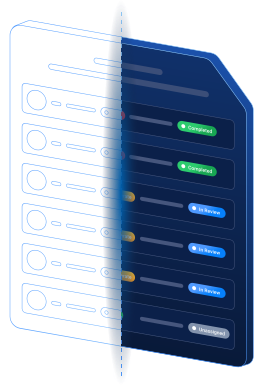
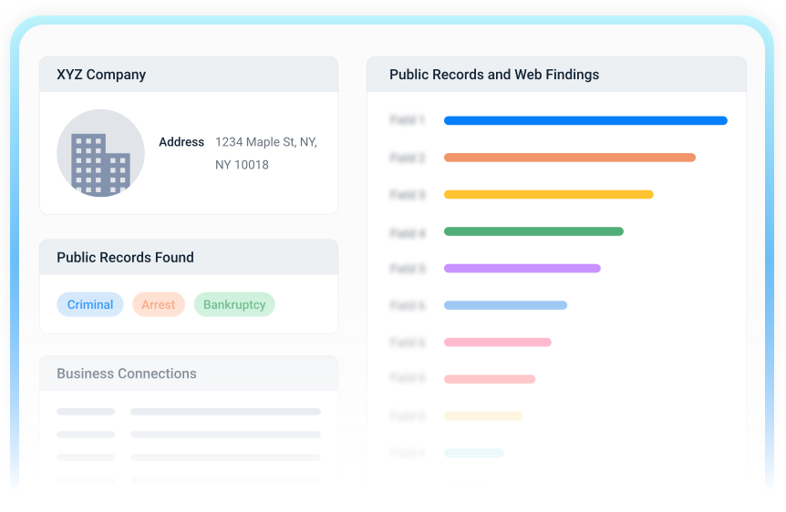

Connect the evidence.
Bring relevant public information into one research workspace.
WORKBENCH / ENTITY RESEARCH
Bring public information about people and businesses into a focused research workflow, with AI-assisted analysis and structured reporting.
Explore Workbench ↗
Bring relevant public information into one research workspace.
Review signals in context and identify what needs a closer look.
Organize findings and supporting information for the next step.
ONE WORKSPACE. A MORE CONNECTED VIEW.
Combine publicly available information from multiple sources rather than switching between disconnected tools.
Use automated processing and identity-resolution tools to surface relevant relationships and areas for further investigation.
Keep findings organized with supporting details so research can be reviewed and communicated consistently.

BUILT AROUND THE INVESTIGATION
Workbench connects collection, analysis and reporting in one product experience. Clear information hierarchy helps teams navigate complex capabilities without losing sight of their research question.
Start with the person or business relevant to the investigation.
Explore the available information and the relationships between findings.
Preserve supporting context for review and reporting.
A CLOSER LOOK
Entity research using public information, with tools for analyzing and reporting findings about people and businesses.
Workbench is part of Skopenow's product suite, alongside capabilities for network visualization, location-based research and risk signals.
Contact the Skopenow team to discuss your requirements and request a product walkthrough.
SEE THE PRODUCT IN CONTEXT